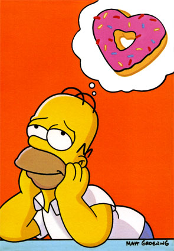

Conclusion, Current and Future Work

Contributions
- Control of SPASS-XDB's reasoning with world knowledge
- More sources of world knowledge
- User friendly interfaces
- Testing demonstrates potential
Current and Future Work
- Automode to configure control options
- Integration with SInE ontology axiom selection
- Improved real-time performance
- Controlled natural language (ACE) interface
- Investigate theoretical properties
- Make it play sporcle and
then
Trivial Pursuit!